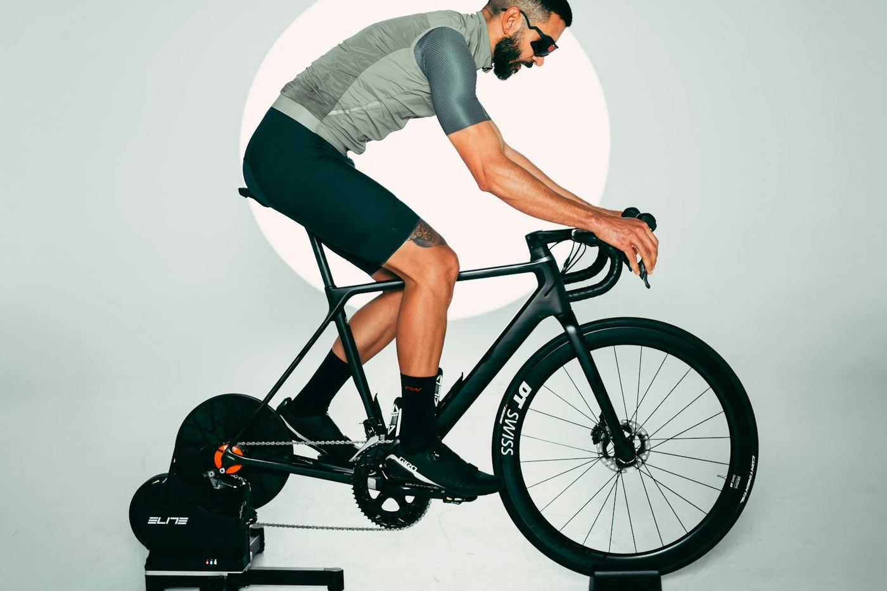
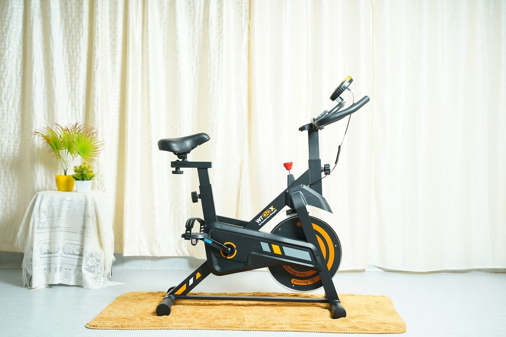

Smart bike vs turbo trainer
A smart trainer turns the bike you already own into an indoor bike. A smart bike is a dedicated indoor machine. Here is how to choose between them, and where exercise bikes such as Peloton fit.
We earn a commission if you buy through links on this page, at no extra cost to you. As an Amazon Associate we earn from qualifying purchases. Prices are UK guide prices checked on 2 November 2026; they change often, so check the retailer before you buy. How we choose products.

The short answer
Buy a direct-drive smart trainer if you own a road or gravel bike, ride mostly on your own, and want the best ride for the money: good ones start around £400. Buy a smart bike if several people will share it, you want it permanently set up with zero fuss, or you want to stop wearing out your outdoor bike. Expect to pay at least £1,100.
The four types of indoor bike
| Type | How it works | UK price range | Best for |
|---|---|---|---|
| Wheel-on trainer | Your rear tyre presses on a roller | £150–£350 | Trying indoor riding on a budget |
| Direct-drive smart trainer | Rear wheel off; chain runs on the trainer's cassette | £280–£1,600 | Most cyclists who own a bike |
| Smart bike | Complete indoor bike with built-in resistance and virtual gears | £1,100–£3,500+ | Shared households, set-and-forget |
| Exercise / spin bike | Gym-style bike, often tied to a class app | £300–£2,500 plus subscription | Fitness classes rather than cycling |
Direct-drive smart trainer: pros and cons
Pros
- Much cheaper: the Wahoo Kickr Core 2 is £499.99 and the JetBlack Victory V2 about £399
- You ride your own bike, with your exact fit and contact points
- Accurate power (±1–2%) and ERG mode for structured workouts
- Works with every major app
- Small enough to store in a cupboard or take to races for warm-ups
Cons
- Wears your chain, cassette and frame; sweat is corrosive
- Setup time each ride if the bike also goes outside
- You may need a cassette (£40–£80) and thru-axle adapters
- Different family members need saddle and bar changes
- Carbon frames are fine on direct-drive trainers, but check your brand's guidance
Smart bike: pros and cons
Pros
- Always ready: get on and ride in under a minute
- Quick fit changes, so a household can share it
- No wear on your outdoor bike
- Virtual shifting that mimics Shimano, SRAM or Campagnolo
- Often quieter and more stable than a bike on a trainer
Cons
- Expensive: £1,099.99 for a Zwift Ride V2, £3,499.99 for a Kickr Bike Pro
- Heavy (most weigh 40kg or more) and takes permanent floor space
- Fit is close to your road bike, never identical
- If it breaks, the whole bike goes back for repair
- Some, like the Zwift Ride, work best with one app
What about Peloton-style exercise bikes?

They are built for instructor-led classes, not for cycling training. They usually lock you into one app: Peloton's All-Access membership costs £45 a month, against £17.99 for Zwift. Most can't change resistance automatically from third-party apps, and few have a freewheel. If you think of yourself as a cyclist, a smart trainer or smart bike will suit you better. If you want classes and never ride outside, an exercise bike is a reasonable choice.
Three-year cost of ownership
Rough UK figures, using a Zwift subscription at £17.99 a month (about £648 over three years) for every option.
| Setup | Hardware | Extras over 3 years | Total |
|---|---|---|---|
| JetBlack Victory V2 + your bike | £399 | £120 chain and cassette wear | about £1,170 |
| Wahoo Kickr Core 2 + your bike | £500 | £120 chain and cassette wear | about £1,270 |
| Zwift Ride V2 (with Kickr Core 2) | £1,100 | minimal wear parts | about £1,750 |
| Wattbike Proton (free Wattbike Hub app) | £1,795 | none if you skip Zwift | £1,795 to £2,440 |
| Wahoo Kickr Bike Pro | £3,500 | minimal | about £4,150 |
The trainer wins on cost unless you would otherwise buy a second bike just for indoor use. A used road bike dedicated to the trainer (£200–£400) plus a Kickr Core 2 still costs well under a Zwift Ride.
Which should you choose?
- You own one good bike and ride outdoors at weekends: trainer, plus a cheap second-hand bike that stays on it.
- Two or more people will ride it: smart bike. The Wattbike Proton fits riders from 4ft 6in to 6ft 6in.
- You only ride Zwift: Zwift Ride V2 is the best-value smart bike.
- You train seriously with structured plans: a high-accuracy trainer such as the Kickr V6 or Elite Justo 2, or the Tacx Neo Bike Plus if budget allows.
- You live in a flat: any direct-drive trainer or smart bike plus a thick mat; avoid wheel-on trainers, which are noisier.